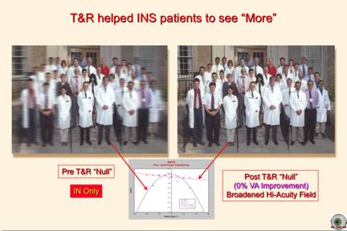

How
Someone with INS “Sees” the World and How to Clinically Assess Therapeutic
Improvements in Visual Function
L.F.
Dell’Osso, Ph.D.
From
the Daroff-Dell’Osso Ocular Motility Laboratory, Louis Stokes Cleveland DVA
Medical Center and Depts. of Neurology and Biomedical Engineering, Case Western
Reserve University, Cleveland OH, USA
OMLAB Report #030509
Written: 3/5/09; Placed on
Web Page:
3/5/09; Last Modified: 7/22/10
Downloaded from: OMLAB.ORG
Send
questions, comments, and suggestions to: lfd@case.edu
This
work was supported in part by the Office of Research and Development, Medical
Research Service, Department of Veterans Affairs.
Presented in part at the
2006 ARVO and 2009 Asia-ARVO and NANOS meetings.
Early research
into infantile nystagmus syndrome (INS, aka congenital nystagmus) (1) made it clear that assessment of visual
function in such patients required more than merely taking a visual acuity
measurement in primary position, or even in the “null” position (2-5). As far back as 1974, Dr. J. Lawton Smith recognized the
implications of this research and the changes that should be made by the
ophthalmologist in the office. In one of his classic tapes he remarked, “You
ought to measure their vision, let’s say, straight ahead, to the left, and to
the right” (6). Others have also come to the same
conclusion (7). There is no doubt that for accurate,
repeatable diagnoses of childhood nystagmus, for determination of the most effective
therapeutic approach, and to objectively assess therapeutic efficacy,
eye-movement recordings are necessary; that has been evident since the first
ocular motor study of INS surgery (8).
The single
factor most responsible for the lack of progress in the medical care of
nystagmus patients over the past 30 years is the failure of the
ophthalmological community to encourage the establishment of at least one
ocular motor laboratory in each major city despite overwhelming evidence
supporting their necessity for the highest standard of medical practice. It is
also in many ways responsible for the widespread misunderstanding of INS and
the near absence of adequate teaching of the subject in ophthalmologic
residency programs. There is simply no excuse for a patient or parent in the 21st
century to hear from their physician (as they still do), “You have nystagmus,
there is nothing to be done,” or even worse, “Your child has nystagmus, he may
be blind.” Such misstatements and dire predictions were common in the 1940’s
(personal knowledge); in light of what we now know, they reflect ignorance of
the condition and are unconscionable. In an attempt to overcome the excessive
inertia in the ophthalmological community, the following clinical assessment
methods are presented below. Although not a substitute for accurate
eye-movement data, they should at least help the INS patient obtain more
effective therapy.
First, it is
important for the physician to appreciate exactly how INS affects visual
function. Shown below are photos representing what an INS patient sees as he
directs his gaze to the left and right of the region of highest visual acuity
(i.e., the region of peak NAFX). Note that these photos do not represent visual fields; the acuity
simulated is for each gaze angle when the patient looks at a particular person
in the photo while keeping his head still in primary position. Thus, they
represent foveal vision
at each gaze angle.
Figure
1. Photos simulating pre- and post-T&R foveal vision at different gaze
angles and pre- and post-T&R plots of the NAFX function vs. gaze angle for
an INS patient with poor primary position visual acuity.
Figure 1
simulates both what an INS patient with low primary-position acuity sees and
shows the corresponding NAFX vs. gaze angle curves. The pre-tenotomy and
reattachment surgery (T&R) photo shows the limited range of gaze angles for
which acuity is maximal, albeit poor (i.e., the patient must look through this
narrow ‘window’ of best acuity by constantly redirecting his head to point at
each new target/person. The post-T&R photo shows both a broadening of the range of gaze angles with
approximately peak acuity (broader NAFX curve peak)—he sees
‘more’—and an improvement
in the peak visual acuity region (peak NAFX)—he sees ‘better.’ Now, the
patient has a much broader ‘window’ of high acuity and can rapidly make
saccades to each target/person without repositioning his head.

Figure
2. Photos simulating pre- and post-T&R foveal vision at different gaze angles
and pre- and post-T&R plots of the NAFX function vs. gaze angle for an INS
patient with good primary position visual acuity.
Figure 2
simulates both what an INS patient with high primary-position acuity sees and
shows the corresponding NAFX vs. gaze angle curves. The pre-T&R photo shows
the limited range of gaze angles for which acuity is high (i.e., the patient
must look through this narrow ‘window’ of high acuity by constantly redirecting
his head to point at each new target/person. The post-T&R photo still shows
a broadening of the
range of gaze angles with approximately peak acuity (broader NAFX curve
peak)—he sees ‘more’—but shows no improvement in the previously high peak visual
acuity region (peak NAFX) Again, the patient has a much broader ‘window’ of
high acuity and can rapidly make saccades to each target/person without
repositioning his head.
In the office,
all nystagmus patients should have their visual acuity recorded at lateral gaze
angles in addition to primary position. That will provide baseline curves of
visual acuity vs. gaze angle that will mimic the NAFX curves shown since the
NAFX is linearly proportional to decimal visual acuity. Recording only
primary-position visual acuity does not provide any measure of the broadening
effects of EOM surgery and will mislead the physician, in cases like that shown
in Figure 2, into the false conclusion that the surgery did not improve the
patient’s visual function.
The patient will report that he sees ‘better’ (he actually sees ‘more’) but the
physician will not have the necessary data to understand why and may
incorrectly conclude that the surgery did not help the patient.
How can a visual
acuity curve be generated in the office? Simply have markers placed on the
floor at gaze angles of 10°, 20°, and 30° to each side of primary position
(also marked as 0°). Then, with the patient’s head restrained to the
straight-ahead position, take acuity measurements after rotating the chair to
each gaze angle. For binocular patients, binocular acuities are sufficient. For
those with strabismus, the procedure must be repeated twice, once for each eye
while the fellow eye is occluded. In this latter case, the curves will not
match each other since the fixating eye influences the position of peak acuity
(aka the ‘null’ position) in INS. If the patient has fusion maldevelopment
nystagmus syndrome (FMNS, aka latent/manifest latent nystagmus), higher
acuities will be in adduction
of the fixating eye due to Alexander’s law variation of the FMN. Comparing
these pre-surgical curves to those taken post-surgery will provide data
demonstrating two of the factors shown to improve with EOM
surgery—broadening and raising the visual acuity peak. Post-surgical
improvements in target acquisition time are more difficult to measure in a
clinical setting.
If the INS
patient has an eccentric “null,” the Figures would be the same except that the
position of the maximal-acuity regions (peak NAFX values) would appear at the
eccentric position. Any four-muscle
surgery to rotate that peak to primary position should have the same effects as
those shown in the Figures. That is, a Kestenbaum resect and recess procedure
or an Anderson plus T&R (i.e., two agonist muscles recessed and the two
antagonist muscles undergoing a T&R) procedure. To date, there is no
eye-movement evidence that an Anderson procedure alone (two recessions only)
will have either the same or any broadening of the NAFX peak. In INS cases
where the patient is binocular and the INS damps with convergence, the best
approach is the bimedial recession surgery which will have the same effects as
the above Figures show; convergence improvements are usually greater than
gaze-angle improvements in patients with both eccentric peaks and vergence
peaks in their NAFX.
To assess visual function improvement post-surgery:
1) determine the percent increase in the longest foveation
domain (LFD), given by
%Improvement = 100[LFDpost –
LFDpre]/LFDpre
where LFD = the
range of gaze angles where the NAFX is ≥0.9[NAFXpeak] (i.e., the range of gaze
angles for which the NAFX is within 10% of the peak value;
2) determine the
percentage improvement in visual acuity, given by
%Improvement = 100[VApost –
VApre]/VApre.
As stated above,
this gives the physician two static measures of visual function improvement,
how much ‘more’ and how much ‘better’ the patient sees. Measuring improvements
in target acquisition time (i.e., how ‘fast’ the patient can acquire a new
target) requires eye-movement data; these data have documented that the T&R
procedure (and, therefore, all four-muscle procedures) allows patients to see
‘more,’ ‘better,’ and ‘faster” (9-12).
The reason
visual function improvement is best expressed in terms of percentages rather
than either lines (acuity) or degrees (gaze-angle range) is that percentages
more accurately reflect the changes in visual function. It should be noted that
a 100% improvement in a patient’s visual acuity from 20/400 or 20/200 will make
a more dramatic improvement in a patient’s life than a 100% improvement from
20/40.
Measuring visual
acuity at various gaze angles in addition to primary position provides the
clinical data necessary to determine the improvements in visual function
following therapy. However, only eye-movement recordings can eliminate the
misdiagnoses that occur in patients with strabismus and nystagmus.
There is one
other topic that is relevant to this report, the primary outcome measure of studies of INS therapies. As should
be evident from the above considerations, the commonly used clinical measure of
peak visual acuity (usually with head, and therefore, gaze angle uncontrolled)
is neither an adequate nor a scientifically valid measure of EOM surgery or
non-surgical therapies of INS. First, because some INS patients will have
waveforms with excellent foveation quality (i.e., high NAFX) at their preferred
gaze angle, no therapy will improve that measure despite improvements in other
measures of visual function. Thus, such studies will be flawed by false
negative results. Second, because increasing the breadth of the NAFX vs. Gaze
Angle curve, thereby increasing the range of gaze angles with the highest
visual acuity, results in a more useful increase in visual function than simply
increasing peak acuity by a line or two, using peak acuity as the primary
outcome measure will miss this more important measure. Third, just as a motor
measure (ocular alignment) is the primary outcome measure of strabismus surgery
(a motor therapy), the primary outcome measure of nystagmus surgery (a motor
therapy) should also be a motor measure (i.e., waveform foveation quality as
measured by the NAFX). Fourth, both ocular alignment (for strabismus surgery)
and the NAFX (for nystagmus surgery) are direct measures of the therapy whereas binocular acuity
(for strabismus surgery) or measured visual acuity (for nystagmus surgery) are
tertiary measures subject to many intervening, idiosyncratic, confounding
factors.
REFERENCES
1. CEMAS_Working_Group.
A National Eye Institute Sponsored Workshop and Publication on The
Classification of Eye Movement Abnormalities and Strabismus (CEMAS). In The
National Eye Institute Publications (www.nei.nih.gov). 2001, National
Institutes of Health, National Eye Institute: Bethesda, MD.
2. Dell'Osso
LF. Fixation characteristics in hereditary congenital nystagmus. Am J Optom Arch Am
Acad Optom
1973; 50:85-90.
3. Dell'Osso
LF. Improving Visual Acuity in Congenital Nystagmus. In: Smith JL, Glaser JS,
eds. Neuro-Ophthalmology Symposium of the University of Miami and the Bascom
Palmer Eye Institute, Vol. VII. St. Louis: CV Mosby Company, 1973; 98-106.
4. Dell'Osso
LF, Flynn JT, Daroff RB. Hereditary congenital nystagmus: An intrafamilial
study.
Arch Ophthalmol
1974; 92:366-74.
5. Dell'Osso
LF, Gauthier G, Liberman G, Stark L. Eye movement recordings as a diagnostic
tool in a case of congenital nystagmus. Am J Optom Arch Am Acad Optom 1972; 49:3-13.
6. Smith
JL, Dell'Osso LF. Congenital nystagmus therapy. Cassette Tapes of Clinical
Neuro-Ophthalmology, ed. Smith JL1974; Tape # 23. NOVEL: The Collection of J.
Lawton Smith, M.D., North American Neuro-Ophthalmollgy Society.
7. Yang
D, Hertle RW, Hill VM, Stevens DJ. Gaze-dependent and time-restricted visual
acuity measures in patients with Infantile Nystagmus Syndrome (INS). Am J Ophthalmol 2005; 139(4):716-8.
8. Dell'Osso
LF, Flynn JT. Congenital nystagmus surgery: a quantitative evaluation of the
effects.
Arch Ophthalmol
1979; 97:462-9.
9. Wang
Z, Dell'Osso LF, Jacobs JB, Burnstine RA, Tomsak RL. Effects of tenotomy on
patients with infantile nystagmus syndrome: foveation improvement over a
broadened visual field. JAAPOS 2006; 10:552-60.
10. Wang
ZI, Dell'Osso LF. A review of the tenotomy nystagmus surgery: origin,
mechanism, and general efficacy. Neuro-Ophthalmol 2007; 31:157-65.
11. Wang
ZI, Dell'Osso LF, Tomsak RL, Jacobs JB. Combining recessions (nystagmus and
strabismus) with tenotomy improved visual function and decreased oscillopsia
and diplopia in acquired downbeat nystagmus and in horizontal infantile
nystagmus syndrome. J AAPOS 2007; 11:135-41.
12. Wang
ZI, Dell'Osso LF. Tenotomy procedure alleviates the "slow to see"
phenomenon in infantile nystagmus syndrome: model prediction and patient data. Vision Res 2008; 48:1409-19.
Although the
information contained in this paper and its downloading are free, please
acknowledge its source by citing the paper as follows:
Dell’Osso, L.F.: How Someone with INS ‘Sees’ the World and How to Clinically
Assess Therapeutic Improvements in Visual Function.
OMLAB Report #030509, 1-6, 2009. http://www.omlab.org/Teaching/teaching.html